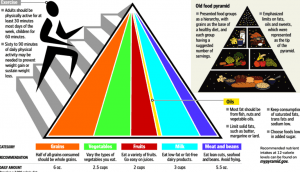

Many fitness enthusiasts, when discussing diet and nutrition, will come to the conclusion that carbs are inherently bad, and should be excised from the diet immediately. Some will even go as far as to accuse the neolithic revolution as the point where human society went irreversibly down hill (but that of course ties into the general “noble savage” ideal you can learn about in my Manthropology videos).
Idiotic leftist anthropology aside, there is some grain of truth to this—certainly, carbohydrate consumption is rampant in the United States, and to a lesser extent the Western world on the whole. A major factor, if not the deciding factor, that causes this is the intertwining of political lobbying and agricultural business, in which corn production—to name one glaring example—is stimulated via political lobbying and reasons to eat vast quantities of corn syrup are made up after the corn is grown.
But the question remains, are carbohydrates inherently as bad for you as some have claimed?
Some Info On Grains
Let’s make something quite clear: cereal cultivation has been around for the better part of 12,000 years, and despite what some have claimed, 10 millennia is more than enough time for people to evolve the capacity to obtain nutritional value from them.
And far from being an “empty calorie”, grains can certainly be very nutritious, more so whole grains rather than refined grains—the difference being that whole grains retain the endosperm, germ, and bran layers whereas refined grains remove the germ and bran. The endosperm is mostly carbohydrate, the germ contains incomplete proteins and fatty acids, and the bran contains dietary fiber, protein, vitamins, and even more fatty acids.
Cereals, when properly prepared, are more than just a quick carbohydrate fix, and yet that carbohydrate fix alone is reason enough to eat your carbs.
Carbohydrates—more accurately, their substrate glucose—are, of course, the main energy currency of the human body. Glucose is very quickly converted to adenosine triphosphate, or ATP, and that in turn is used for purposes of cellular energy (to put it VERY simply). In addition to that, carbohydrates are stored as muscular glycogen for purposes of medium-duration exercise, which is to say the duration of time that a set of an exercise is done.
While glucose can in fact be synthesized from amino acids, and in fact this is the main working arrangement of ketogenic diets, the relatively small amount of carbohydrate content needed, and the quick dietary absorption time compared to proteins, indicates that carbohydrates should be consumed in balance with protein and fat. But then the question remains: what constitutes “balance”, exactly?
A Balanced Diet

To make something else very clear, low carbohydrate diets can get results in weight loss. In fact, studies have shown that they get the fastest results in weight loss—however, those same studies show that on a long enough timeline (the example given was one year), the results for various diet programs, measured in pounds/kilograms lost, will be largely the same: the biggest factor in successful weight loss is a consistent reduction of caloric intake. The macronutrient profile of the diet is not nearly as important.
With that being said, don’t think you can run out and live a healthy and fulfilling life by eating a calorically reduced diet of junk food. You still need the macro and micronutrients in their proper amounts for purposes of cellular energy, structural repair and growth, and other functions—and like it or not, the recommended daily allowances are adequate benchmarks, if not perfect.
Note that the food pyramid, which was for many years slanted heavily towards carbohydrates, has now been shifted to show all the nutrients in roughly equal amounts.
Despite the fact that agrobusiness is as strong as its ever been, the federal government has been more proactive in recent years towards alleviating the eternally high obesity rates of the US, if only because morbidly obese citizens are net financial losses.
And while the federal government can certainly be criticized for many things, the new revised food pyramid is actually pretty good. While certain goals (weight loss, bulking, muscle building) may require some variation to a nutrient profile, bear in mind that this should be done with caution, as an excess of various nutrients can be damaging to your health.
If you want general good health, and adequate nutrients to sustain exercise and general well being, you can’t go wrong with eating balanced amounts of all nutrients, carbohydrates included.
Read More: Are Carbohydrates Your Friend Or Foe?